A self guided nerf gun turret
Autonomous Nerf Gun Turret
Introduction to the assignment
During the DigiFab course we have been introduced to a great array of electronics and Digital Fabrication methods. Among electronics we have been looking at micro controllers such as esp32 or the Arduino. We were also introduced to Raspberry Pi which I decided to be my electronic controller of my final project. Among digital fabrications method we have been introduced to small scale fabrication methods such as vinyl cutting and laser cutting to bigger fabrication methods such as 3D printing and PCB.
For the final project we were required to use atleast one theme from electronic and one from digital fabrication. For my electronic theme I as already mentioned choose the Raspberry Pi as my eletrical component of the project. In particular I choose the Raspberry PI 3 Model B. The Raspberry Pi 3 Model B is a single board computer. It has a around the same size as a credit-card, while having a great array of pins (referred to as GPIO) which you can connect to other electronical components which then again can be controlled from the Pi, by controllings outputs from the pins. I choose the Raspberry Pi because it was in comparison to other component we went through probably the most powerfull board in terms of just pure power. In addition, the Pi works very similar to a regular PC in the sense that it uses a operating system with a GUI. The OS is addition Linux based, so I was instantly familiar with how to operate the PI. The Pi also supports code editors, so I could code directly onto the Pi. The raspberry Pi also allowed me to program in Python which uses packages which I wanted to use in the project, more on this later. The Pi also supported camera use, which is a must for my prject.
For my digital fabrication theme I choose 3D printing. I choose 3D printing as my digital fabrication method because of its huge versatility in building different physical components. For 3D printing I used the Pruza 3D printers. I used the Prusa i3 MK3 to build most of my components, components I had to redo I 3D printed with Prusa MINI. The MINI has a smaller platform to print on, therefore when printing on the MK3 multiple components were printed at the same time, while the MINI was used to print single components which either were missing or failed in the first print. For filament I used PETG for all printed components. Other software such as Pruza slicer and Fusion 360 was also used to visualize and prepare components before printing.
Introduction to the project
For the final project I decided to build an autonomous nerfgun turret. The build follows this tutorial: Bluetooth Nerf turret. However, despite my turret using the 3D object of this tutorial, I've still had to much of my own work in regards to electronics, fabrication and software. The original turret is controlled by a user through bluetooth and independent software. My version is completely independent in every decision it makes. By using Machine-Learning (ML) object detection algorithm to detect people in images the turret will move on its own in order to aim at a person. When the turret has aimed in on a person it will shoot a nerf bullet.
The original tutorial also uses Arduino among other electrical components to controll the turret. Mine however, uses Raspberry Pi, so I've had to do a bit of my own adaptation of placement of the Pi in addition to the wiring is also different compared to the original. Its also here my choice of the Pi as my main controller comes in handy. Python supports a great array of ML libraries for doing ML. For my project however, I haven't trained my own model but rather just used a pretrained model, which easily is fit into the Pi.
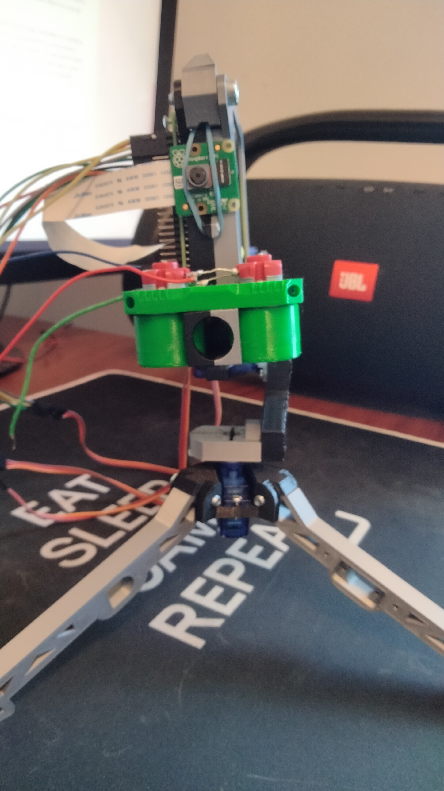3D printing components
3D components of the model was retrieved from the tutorial described above. The tutorial had 2 models of the turret. One using the MG90 servo motor and one using the M996R servo. For my project I used the MG90 servo components. Before printing all components, I wanted to get an idea of every component was gonna sit on each other. To get some insight, I used fusion360, all the 3D object retrieved from the tutorial was placed inside of the fusion360 and placed like they would be sitting on each other. Fusion360, there by giving me the broad idea of how I was going to place all the components on each other.
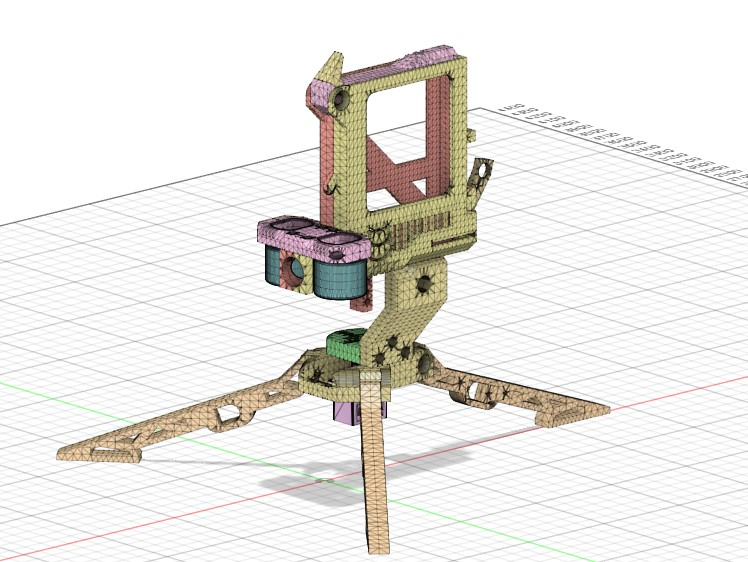Here after getting the broad idea of how components should be placed on each other, I felt confident enough to start printing the components. Because the project consist of so many components I've had to print multiple times. To get the Prusa printer files I used their software prusa slicer to generates these files from 3D object files. Placing the different 3D components in the prusa slicer software, I could decide how many components I wanted in each print and how they should be printed and with what filament. The complete process of printing is described in my other 3D printing project, here. Having printed I could move on to start building the turret.
Building the turret
Building the turret wasn't any difficult task. I started from the bottom up screwing legs together with the base platform. Inside of the base platform is were the first servo motor was placed. This servo controlls the horizontal direction (x direction). For screwing I used 2 types of screws, a bigger M5x20 screw and the smaller M2x10 screws. Each leg was conected to the bottom platform with one M5x20 screw each, while the x-ax controlling servo was connected to the platform with two M2x10 screws.
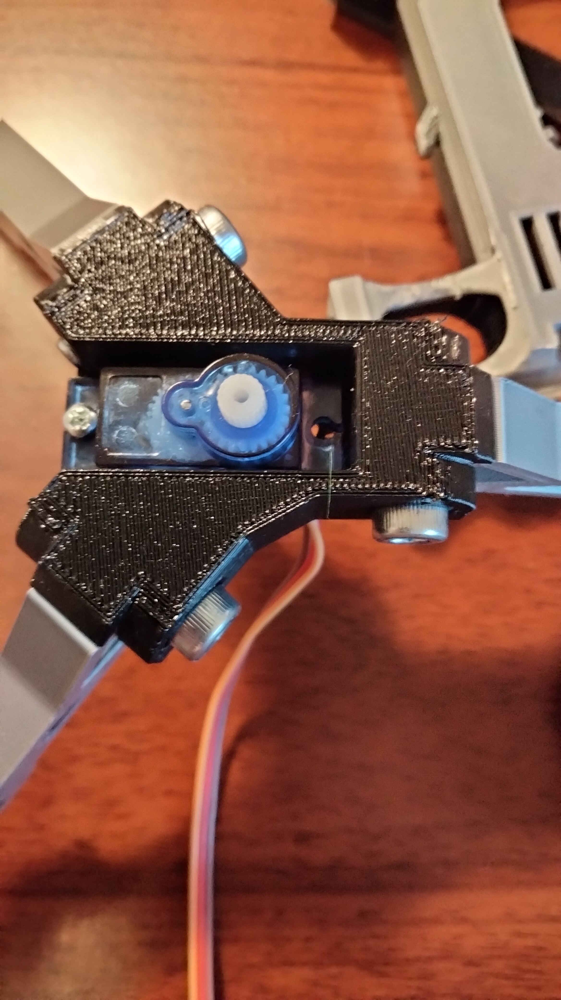Next up is putting together the middle connecter component between the legs and the head of the turret. This component will also have a servo connected to it. This servo controlls the vertical direction (y direction) of the turret. This component is connected directly onto the x-ax servo. Before connecting the middle component with the x-servo, the x-servo was adjusted with a small python script centering the servo. The servo can't swing 360 degrees but only 180. By centering first and placing the connecter to look forward on the x-servo, I ensure the turret can swing 90 degrees to both sides.
Next up is putting the head together. The head consist of 2 halfs which together creates the barrel and the nerf bullets holder. On the top front of the head is a down pusher. This down push is connected to the head by a M2x20 screw. This screw also helps the two half keeping together. The pusher keeps down the bullets making sure bullets don't get stuck in the holder. In front of the head is a little hook. This hook uses and elastic to keep downward push on the bullets. For my version of the turret this elestic also keeps the camera in place in front of the head. On the backside of the head will the third and last servo be sitting. This servo controlls the shooting mechanism. A little arm is connected to. On the other side of the arm, a wire is pushed though a hole in the arm and into the head of the turret. When this servo starts moving back and forth it will push a nerf bullet to the front of the head. In front of the head sits to DC motors which will shoot the the bullet with high speed, more on this later. After having pushed a bullet forward, the arm will move back. The head extends a little further behind on the lower side of the head, making space for a new bullet be pushed down, when the arm has retracted completely. The shoot-servo is connected to the head with 2 M2x10 screws, these also helps keeping the two halfs of the head together.
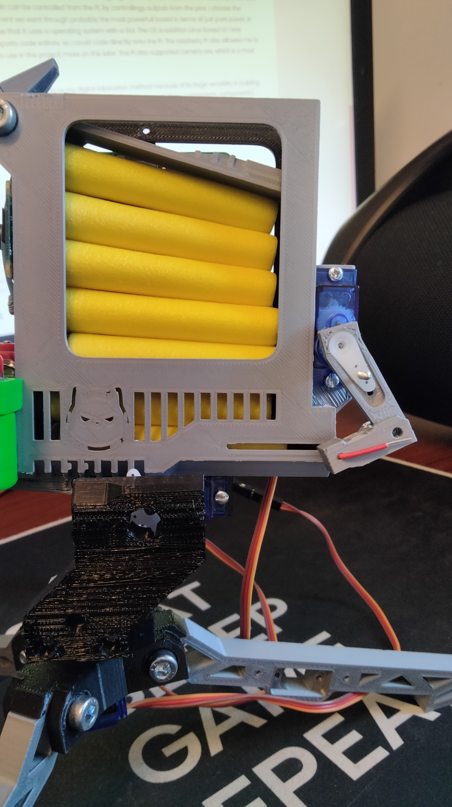Below the head is the y-servo is the screwed to the head with 2 M2x10 screws. Again these also helps keep the two halfs of the head together. Before connecting the y-servo to the connecter between legs and head, the y-servo is centered. Again this is to make sure the servo can swing 90 degrees up and down.
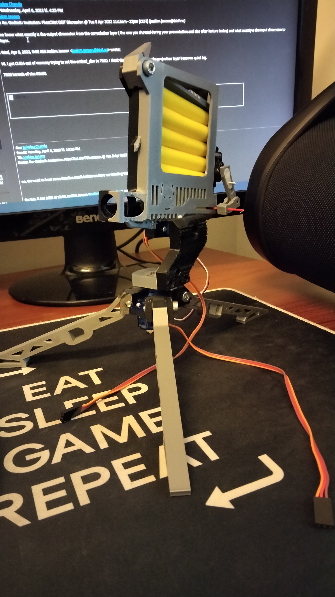Now only one component is missing, and that is the 2 DC motor which will send the bullets flying with high speed. The two DC motor are covered with rollers which are also 3D printed. When the Dc motors starts spinning to will the rollers as well. The two DC motors are connected with a rectifier diode. This diode makes sure that the current will only move in one direction despite the two DC motor being connected. For connecting the two DC motors, I soldered the diode to the two DC motors. Here after I also soldered 2 wires which can be connected to some power supply. For my case I just plugged the wires to an 9V battery when ever I needed the rollers to roll. I will address this problem in a later section. Having a working rollers, they were screwed to head ontop of the barrel. Below you can watch a video testing the shooting mechanism with rollers and shooter arm together.
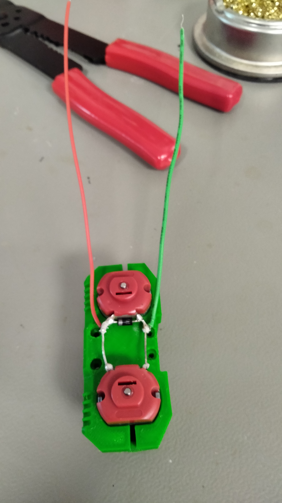 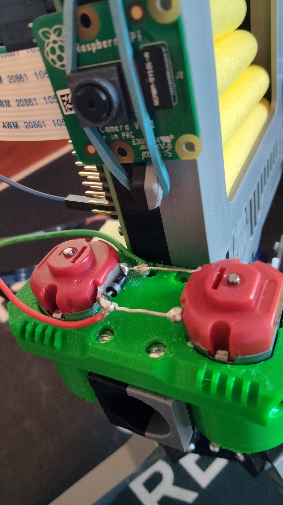Wiring details
There are 2 main components I need worry about when wiring. The first is the servo motors. I won't go into detail how the servo actually works, me not being electrician doesn't help the case either. So as suggested by the internet, I understood that the servo has 3 wires: red (power), brown (ground) and orange (signal). I connected the red and brown wires for each independent servo to its own 5V power and ground pin on the Pi. The yellow wire I connected to GPIO pins which would controll the servo by sending signals through these pins. I would controll these pins by programming.
The second component is the DC motors. I originally was planing to controll when these should roll and not. However, not be an electrician and getting help from the MakerSpace TAs, I was adviced to just connect the DC motors to an independent battery. Doing so I couldn't controll the when rolling should start with the Pi. This is an issues I really would have liked to fix but was unable to, because of lack of knowledge from myself and might I even say the TAs... However, the main objective of getting the turret to shoot was still achieved.
Software
The software used to controll the the turret through the Pi uses 2 main Python libraries. The first being gpiozero. Gpiozero is python library build particularly for controlling the pins of an Raspberry Pi with Python. The library support connecting to electronic components like the servo, creating a very simple and easy to use API for controlling electronic components with the Pi.
The second library I'm using is Open-CV. This is a computervision library which can be used for an array of image applications. For this project I do all image processing through this library. Everything from capturing images, making small drawing on them to the object detection, happens through this library. I showcase in a video below what the turret sees with some visulization of where the firezone is.
Algorithm
The algorithm for controlling the turret is quiet simple if you don't explain the ML object detection algorithm, and this course not being a ML course I won't go into details regarding how the algorithm actually works. However, that being said, I'm using an real time ML object detection algorithm called YOLO, You Only Look Once. The algorithm is based in deep neural networks and is famous for being extremely fast (probably the fastet out there right now), while still being very accurate. In the controll algorithm YOLO takes in images and places what is called bounding boxes around what it thinks is an object, with some percentage certainty. I can decide which degree of certainty I want before a BB is drawn around the object. For my algorithm I've set the certainty threshold to 50%, so when the YOLO model detects a object with certainty 50% or above the bounding box is drawn. Read more about YOLO and the weights I used here.
In addition to bounding boxes being drawn, coordinates, width and height of the object is also returned. From this I can calculate where the center of the object is in the image. From this I can see if the object is more to left side or right side of the turret. From this information I make the turret turn according to this information. So if the center is detected in the left side of the image the turret will turn to the left, while detected in the right the turret turns right. All this turning of course happens because the camera has been centered above the barrel. So whenever the center of an object is within some defined center margin of the center of the image, the turret is aimed such that a shot will hit. The shoot mechanism is therefore activated whenever, the center of the object is detected inside of the margin. As a visulization I've drawn a a red square on the camera feed to show where the "danger zone" is.
This algorithm does has some constraints and can be seen in the video below, the algorithm is far from fluent. Despite me using the lightest YOLO-model available, the algorithm still ran extremely slowly on the Raspberry Pi. Raspberry Pi of course not being optimized at all for deep learning models, I've had to a bit of optimization myself. The main optimization being that I set the algorithm to only process every 10th image. However, this also makes the turret quiet jittery in its movement. To counter act the jitter I used another pin_factory, the pigpiod. I'll explain in the "testing yourself" section how to activate this pin-driver. To cut down on jittery I would also make each move the turret would make whether that be in x or y direction smaller. However, that also meant the turret would move a lot slower.
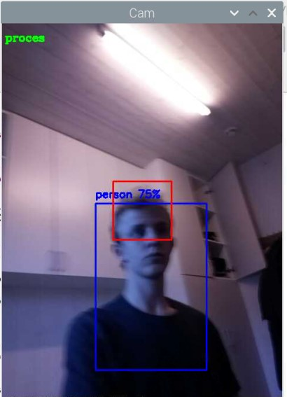Testing yourself
Testing the turret is quiet easy. Download the digifab code from the final project here. Makes sure you download the right weights and config file from the YOLO model you want to load from this site. I recommend the YOLO-tiny as I used. In main.py change the modelConfig and modelWeights variable to the path of your config and weights respectively for YOLO. Open a terminal on the Pi, then write "sudo pigpiod" in the terminal. This activates the pigpiod pin-factory. Then click run and the program will run. Making the roller run make sure to connect the red wire to + and green wire - on a battery. The more powerfull the batteri the faster it will shoot.
Testing and more images
Below are some testing videos. The video will show the turret moving after me as I move. I tried testing the turret with rollers on to, but the video was cut short during to during to a pretty hard hit to the stomach. I recommend causion with higher power batteries and maybe protection glasses.
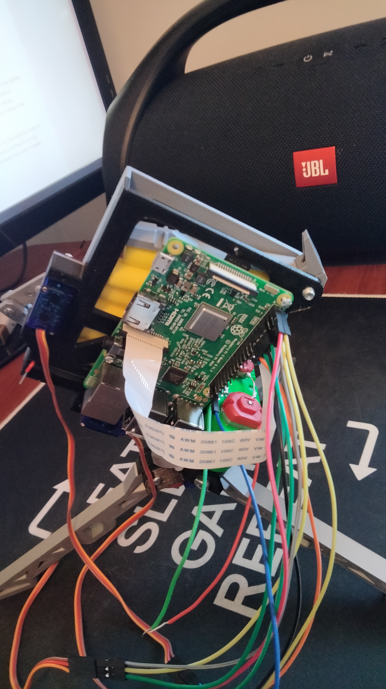 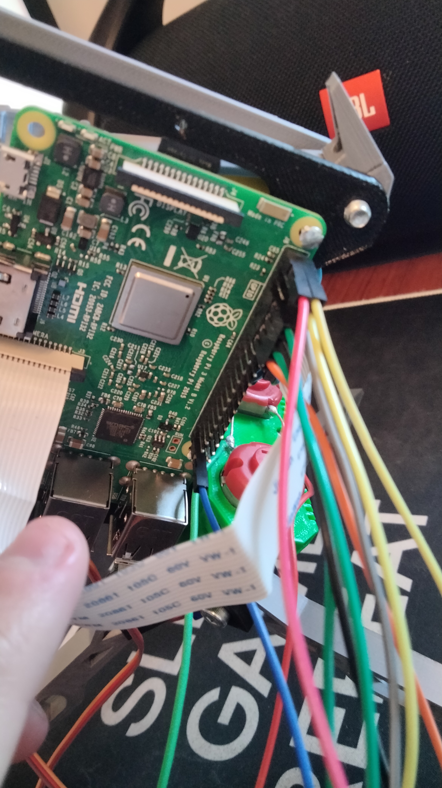 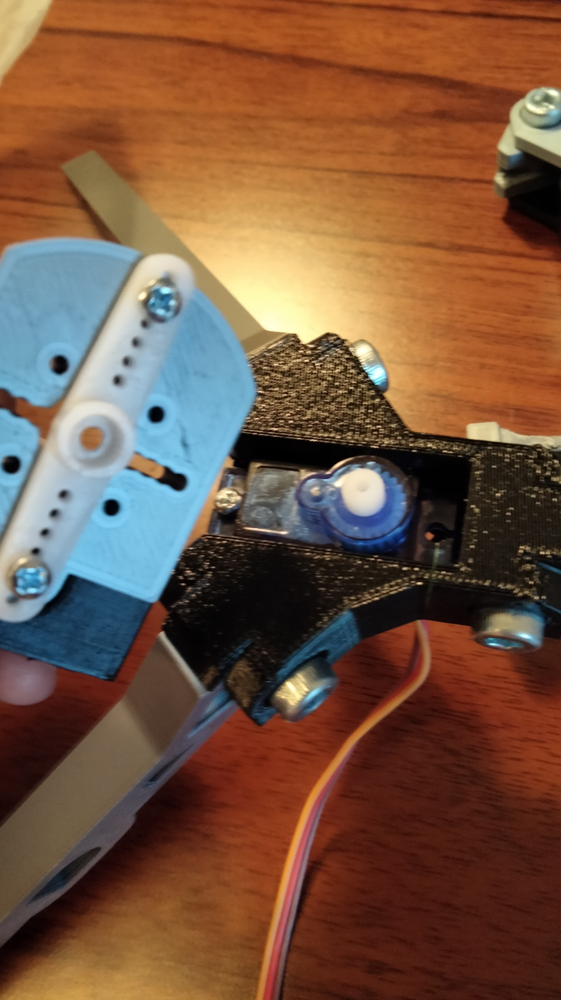 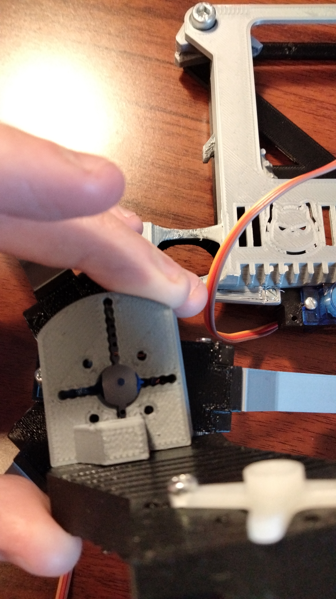
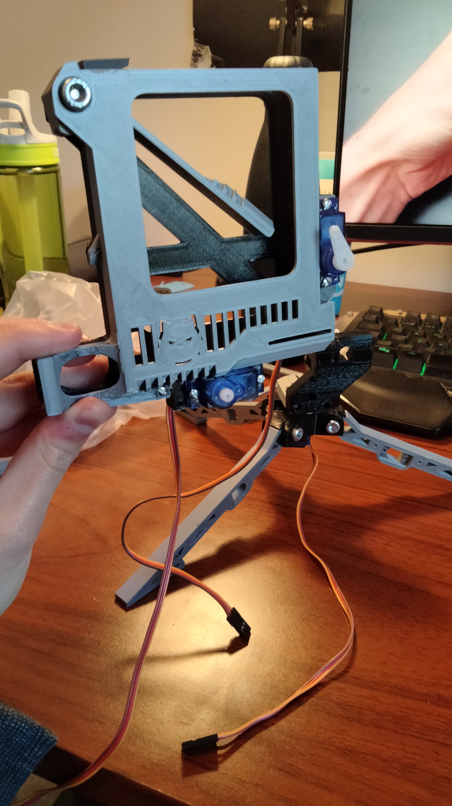
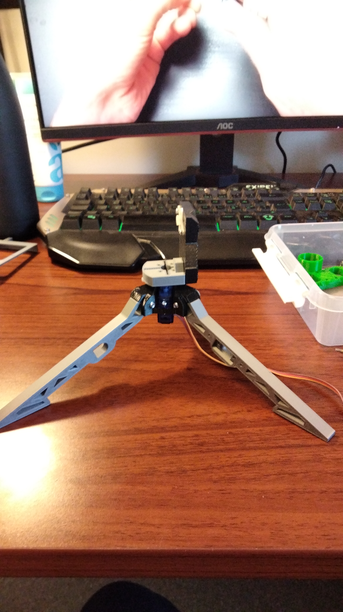
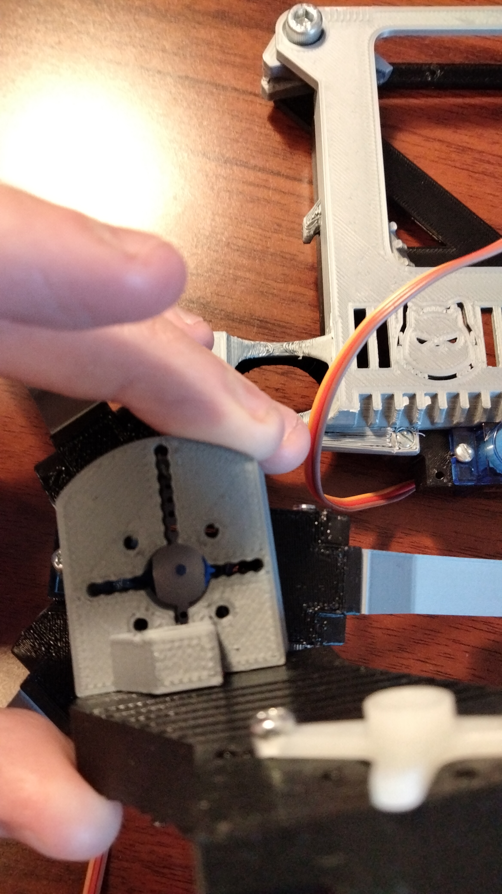
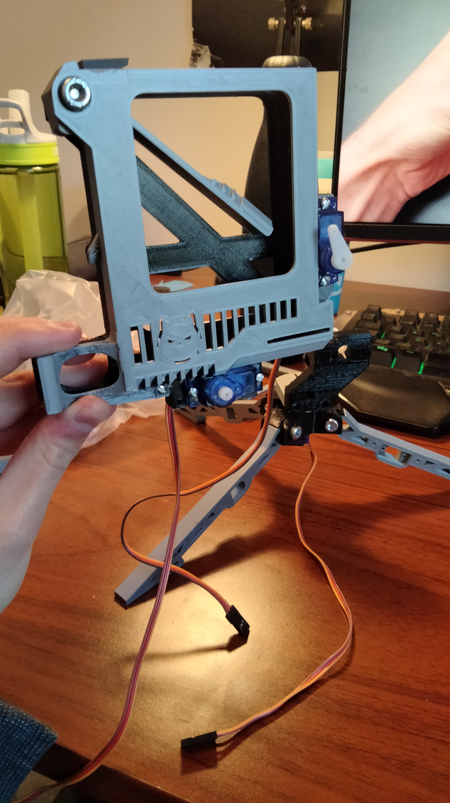
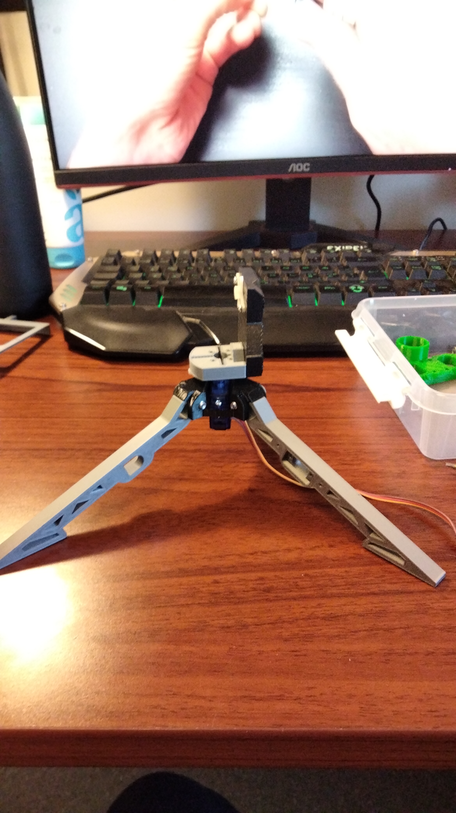